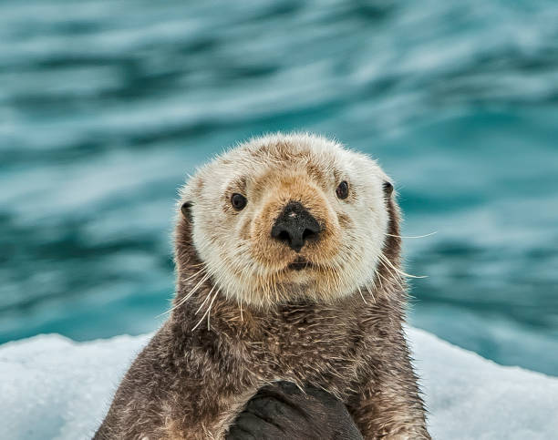
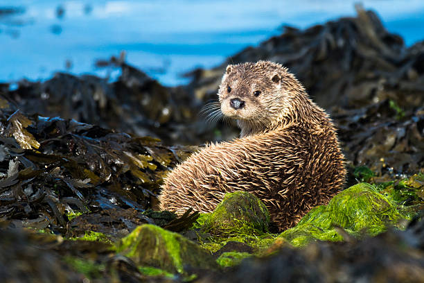
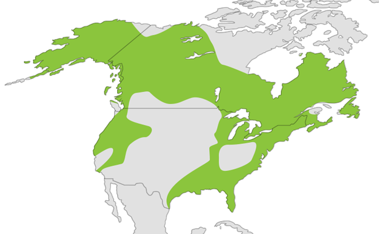

Introduction
Welcome to the tribute page dedicated to these adorable and energetic creatures - otters! This page was created to share fascinating information about these agile mammals and draw attention to their significant role in aquatic ecosystems.

What are Otters?

Otters are a group of semi-aquatic mammals belonging to the family Mustelidae,
which also includes weasels, badgers, and wolverines.
They are known for their playful and social behavior, as well as their love for water.
Otters are widely distributed around the world, with different species found in various regions, from freshwater habitats to coastal areas.
Some key characteristics of otters include:
1. Semi-Aquatic Lifestyle: Otters are well-adapted to both land and water. They spend much of their time in aquatic environments, such as rivers, lakes, marshes, and coastal waters.
2. Swimming Abilities: Otters are excellent swimmers and use their streamlined bodies and webbed feet to propel themselves through water with great agility. They can swim swiftly and gracefully, diving and staying underwater for extended periods.
3. Social Creatures: Many otter species are social animals, living in family groups called "rafts" or "holts." They engage in playful behaviors, such as sliding down riverbanks, chasing each other, and engaging in mock fights.
4. Communication: Otters communicate with various vocalizations, including whistles, growls, and chirps. They also use body language and scent markings to convey information to other otters.
5. Diverse Species: There are different species of otters found in various parts of the world. Some well-known species include the North American river otter, European otter, Asian small-clawed otter, giant otter, and sea otter.
Where do they live?

Curiosities
Tool users
Otters are among the few animals known to use tools. They have been observed using rocks to break open shellfish, clams, and crabs.
They place a rock on their chest or stomach and use it to crack open their prey by pounding it against a hard surface.
Fur coats
Otters have incredibly dense fur, consisting of two layers: an outer layer of long guard hairs and a thick layer of insulating underfur. This fur is essential for their survival as it keeps them warm in cold water. Unfortunately, this luxurious fur also made them a target for the fur trade in the past.
Great Swimmers
Otters are exceptionally agile swimmers. They have webbed feet and a long, sleek body that enables them to glide effortlessly through water. They are capable of reaching speeds of up to 7 miles per hour (11 km/h) while swimming.
Great hunters
Otters have a varied diet depending on their habitat and species. They are skilled hunters, and their diet can include fish, crustaceans, amphibians, birds, and small mammals. Sea otters, in particular, are known for using rocks to dislodge prey from the ocean floor.
Air Pockets
To stay submerged underwater, otters have a unique method of conserving oxygen. Before diving, they take a deep breath and then close their nostrils and ears. They can also store air in their fur, creating air pockets that help them float and stay underwater longer.
Multiple Species
There are 13 recognized species of otters, belonging to the family Mustelidae, which also includes weasels, badgers, and wolverines. Some well-known otter species include the North American River Otter, Sea Otter, Asian Small-Clawed Otter, and Giant Otter.